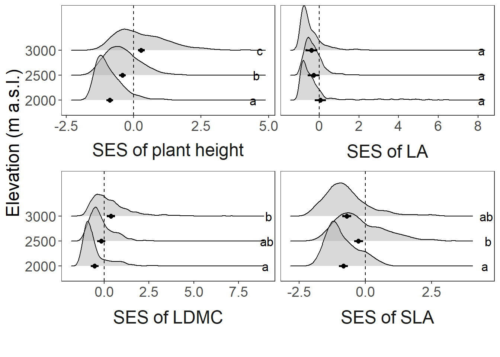
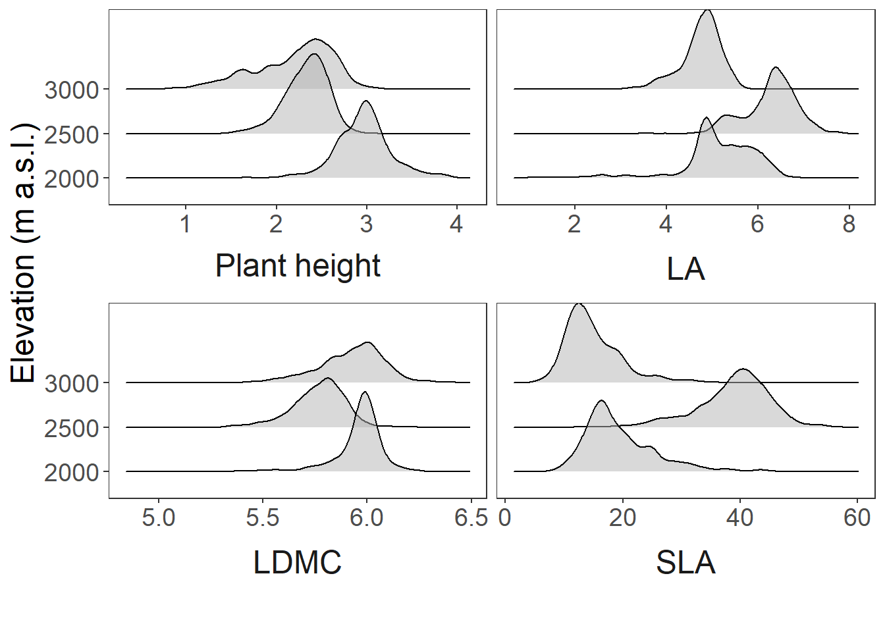
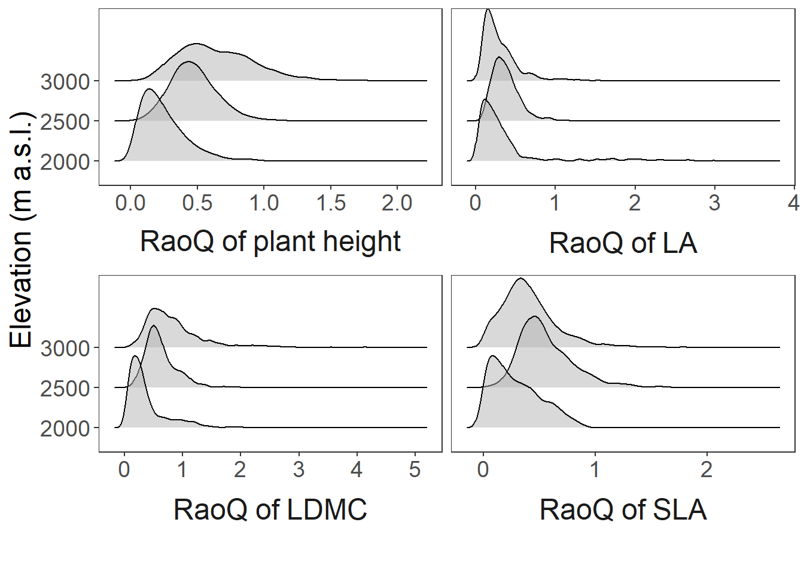

Ch2_results
Results
2880 Cells were included in the analysis, with a total species richness of xx. Elevation did not have a consistent effect on the community assembly of different plant traits (Figure 1). Elevation shifted the assembly of plant height and LDMC from environmental filtering at the low elevation, to limiting similarity at the high elevation. Although communities generally became shorter with elevation (Figure 2a), the diversity of plant height was highest at the high elevation (Figure 3), indicating the presence of very short as well as very tall plants in the alpine. There was strong filtering for high LDMC values at the low elevation (indicated by the narrow CWM distribution). This filtering effect was weaker at the mid elevation, and selected for lower LDMC values on average. The assembly of LDMC shifted to trait divergence at the highest elevation, but once again showing on average more conservative strategies than at the mid elevation (Figure 2).
The assembly of leaf area shifted from being no different from random assembly, to environmental filtering at the mid and high elevation. Environmental filtering was the dominant assembly mechanism at all elevations for SLA, although the filtering effect of SLA was weakest at the mid elevation.


Micro-environmental factors were related to fine-scale variation in community assembly, although the relationships varied greatly between traits and sites. The models had low explanatory power, with R squared values generally below 0.1 (Table 1).
At the low site, soil moisture filtered size traits (height and leaf area) to XX (Table 1). Surface heterogeneity was related to divergence of height, while soil moisture and soil depth were related to divergence in leaf area (Table 2). At the mid site, rock cover was related to height divergence, while soil depth and surface heterogeneity was related to divergence in leaf area (Table 3). Micro-environmental factors also affected the assembly of leaf-economic traits at the mid elevation; with soil moisture and soil depth having a filtering effect on LDMC and SLA respectively, and rock cover related to divergence in LDMC (Table 3). At the high site, soil moisture and surface heterogeneity was related to divergence in plant height, and rock cover was related to divergence of leaf area (Table 4). Soil depth had a filtering effect on leaf area, filtering it towards XX. Surface heterogeneity was related to divergence of LDMC and SLA (Table 4). Divergence of SLA at the high site was also related to rock cover and soil temperature (Table 4).
Surface heterogeneity and rock cover were always related to divergence in size and leaf-economic traits. The directions of the effects of other micro-environmental variables on assembly were not consistent across sites.
::: {#tbl-R2 models .cell tbl-cap=‘Marginal and conditional R2 values of micro-environmehtal models in predicting SES of each trait at the low, mid and high site.’} ::: {.cell-output-display}
| trait |
Low
|
Mid
|
High
|
|||
|---|---|---|---|---|---|---|
| Marginal R² | Conditional R² | Marginal R² | Conditional R² | Marginal R² | Conditional R² | |
| Height | 0.137 | 0.137 | 0.022 | 0.022 | 0.070 | 0.070 |
| Leaf area | 0.334 | 0.601 | 0.085 | 0.213 | 0.036 | 0.036 |
| LDMC | 0.010 | 0.476 | 0.038 | 0.247 | 0.017 | 0.017 |
| SLA | 0.055 | 0.055 | 0.051 | 0.051 | 0.066 | 0.066 |
::: :::
| variable |
Height
|
Leaf area
|
LDMC
|
SLA
|
||||
|---|---|---|---|---|---|---|---|---|
| coefficient | p-value | coefficient | p-value | coefficient | p-value | coefficient | p-value | |
| mean soil temperature | −0.266 | 0.001 | −0.262 | 0.000 | −0.078 | 0.834 | −0.053 | 0.077 |
| mean soil moisture | 0.000 | 0.937 | 0.000 | 0.038 | 0.000 | 0.625 | 0.000 | 0.132 |
| rock cover | 0.005 | 0.058 | 0.003 | 0.518 | 0.004 | 0.131 | 0.001 | 0.889 |
| mean soil depth | −0.002 | 0.852 | 0.008 | 0.008 | −0.005 | 0.253 | 0.006 | 0.197 |
| standard deviation of elevation | 1.679 | 0.005 | 0.285 | 0.615 | 0.141 | 0.825 | −0.975 | 0.146 |
| variable |
Height
|
Leaf area
|
LDMC
|
SLA
|
||||
|---|---|---|---|---|---|---|---|---|
| coefficient | p-value | coefficient | p-value | coefficient | p-value | coefficient | p-value | |
| mean soil temperature | −0.033 | 0.882 | −0.009 | 0.978 | −0.175 | 0.470 | 0.039 | 0.833 |
| mean soil moisture | 0.000 | 0.258 | 0.000 | 0.203 | −0.001 | 0.022 | 0.000 | 0.757 |
| rock cover | 0.006 | 0.027 | 0.001 | 0.700 | 0.001 | 0.714 | 0.004 | 0.031 |
| mean soil depth | −0.007 | 0.206 | 0.019 | 0.000 | 0.002 | 0.546 | −0.025 | 0.000 |
| standard deviation of elevation | 0.408 | 0.692 | 1.859 | 0.035 | 1.886 | 0.062 | 1.076 | 0.302 |
| variable |
Height
|
Leaf area
|
LDMC
|
SLA
|
||||
|---|---|---|---|---|---|---|---|---|
| coefficient | p-value | coefficient | p-value | coefficient | p-value | coefficient | p-value | |
| mean soil temperature | 0.152 | 0.575 | 0.102 | 0.085 | 0.082 | 0.662 | 0.238 | 0.024 |
| mean soil moisture | 0.000 | 0.049 | 0.000 | 0.399 | 0.000 | 0.771 | 0.000 | 0.073 |
| rock cover | 0.002 | 0.523 | 0.004 | 0.021 | 0.004 | 0.197 | 0.008 | 0.000 |
| mean soil depth | 0.004 | 0.092 | −0.006 | 0.013 | 0.004 | 0.144 | −0.003 | 0.255 |
| standard deviation of elevation | 8.369 | 0.000 | −1.281 | 0.146 | 3.340 | 0.000 | 1.903 | 0.032 |